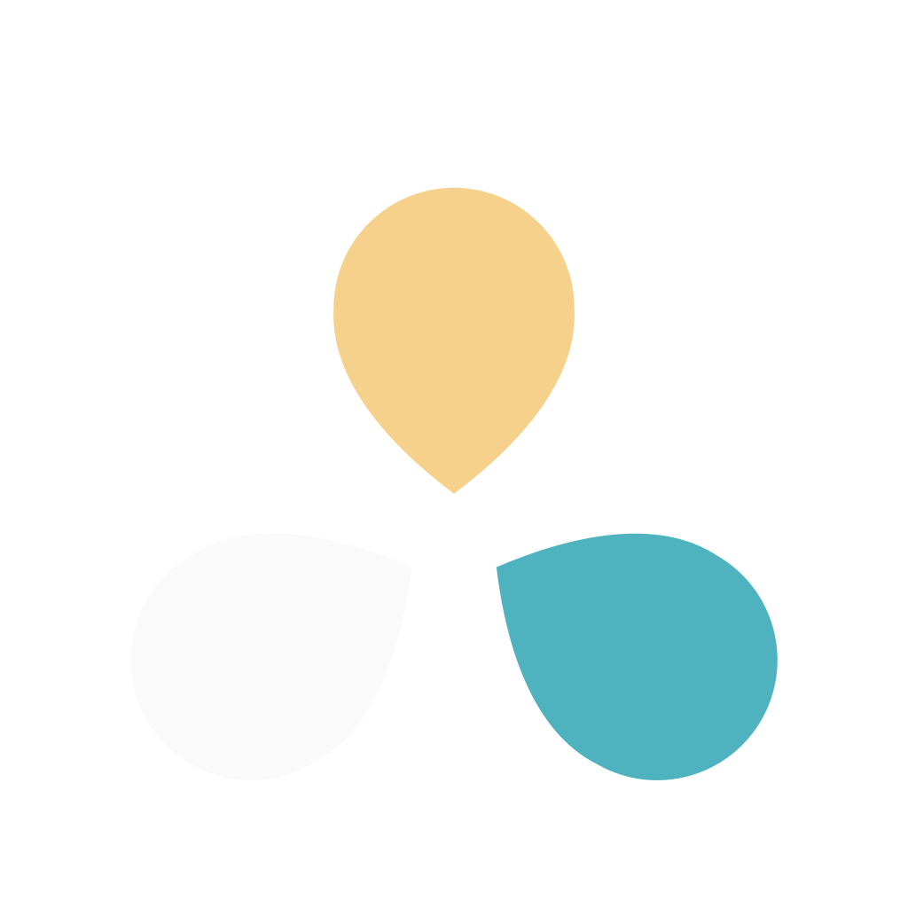

Lol'OS, votre Bbox 4K en mieux
Lol'OS transforme l'interface de votre décodeur Bbox 4K (Android TV) : plus rapide, sans pubs ni télémétrie, avec un écran d'accueil minimal façon Apple TV et des paysages animés.
Sauvegarde
L'état de la TV est enregistré avant toute modification.
Désencombrement
Pubs, télémétrie et applis inutilisées sont désactivées — jamais désinstallées. Vous choisissez.
Nouvel accueil
Un dock de vos applis, la TV en direct en un clic, des paysages en fond.
Outils Android (adb)
L'installateur parle à la TV avec adb, l'outil officiel de Google.
Installation automatique (recommandée)
Télécharge les « platform-tools » officiels de Google (~7 Mo) dans le dossier de l'appli. Aucun droit administrateur nécessaire.
Ou l'installer vous-même
Trouver la TV
La TV et cet ordinateur doivent être sur le même réseau (Wi-Fi ou câble).
Activer le débogage sur la TV (une seule fois)
- Sur la TV : Paramètres → Préférences de l'appareil → À propos.
- Descendez sur Build et appuyez 7 fois sur OK (« Vous êtes maintenant développeur »).
- Retour → Options pour les développeurs → activez Débogage USB (et Débogage réseau s'il existe).
- À la connexion, la TV demande « Autoriser le débogage ? » : cochez Toujours autoriser puis OK.
Sauvegarde
On enregistre l'état actuel de la TV (applis actives, réglages, écran d'accueil) pour pouvoir tout remettre comme avant.
Vos applis
Cochez ce qui doit être désactivé. Une appli désactivée disparaît et ne tourne plus en arrière-plan ; elle se réactive en un clic depuis « Restaurer ».
Jamais touchés (chaînes, système)
Nouvel écran d'accueil
- Dock de vos applis favorites, grandes tuiles, zoom au survol.
- TV en direct en un clic (plus d'écran de recommandations Bouygues).
- Flèche bas : toutes les applis. Appui long sur OK : déplacer, retirer, ajouter.
- Paysages animés (forêt, cascade, océan, nuages, rivière, aurore) et écran de veille assorti.
Personnaliser
Tout est facultatif et modifiable à tout moment. Les réglages actuels de la TV sont affichés.
Message d'accueil
Affiché en haut à gauche de l'accueil. {moment} devient « Bonjour », « Bon après-midi » ou « Bonsoir ».
Écran de démarrage

PNG, JPEG, WebP ou SVG, redimensionnée automatiquement.
Fonds d'écran
Ajoutez vos photos (JPEG, PNG, animées par un lent zoom) ou vidéos (MP4, 1080p conseillé, le son est ignoré).
Météo
La météo du jour sous l'heure (Open-Meteo : gratuit, sans compte ; seule la ville est transmise).
Pas de météo.
Mode nuit
L'animation que la box affiche pendant son démarrage (avant Lol'OS) est verrouillée sur une partition système : l'écran de démarrage Lol'OS prend le relais juste après.
Options
Réglages facultatifs, désactivés par défaut.
Nettoyage de la mémoire
La TV en direct, Chromecast et YouTube sont épargnés. Gain typique : 30 à 60 Mo.
Infos système
Veille profonde
Après ce délai en veille, la box s'éteint vraiment : le rallumage devient un démarrage complet (environ 1 min).
Vérification
La vidéo des chaînes passe par un circuit protégé : sur une capture, le direct apparaît noir, c'est normal. Le test mesure le flux reçu à la place.
Restaurer une sauvegarde
Remet la TV exactement dans l'état d'une sauvegarde : applis, réglages et accueil Bbox d'origine.